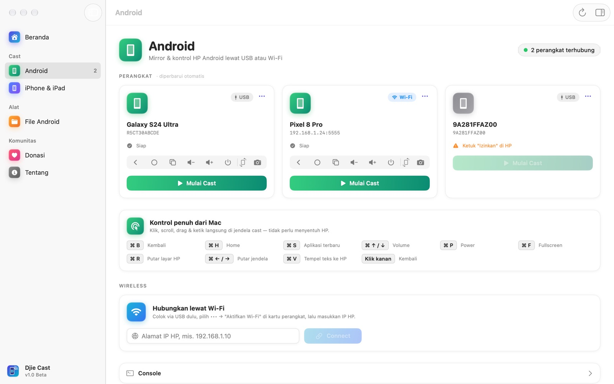
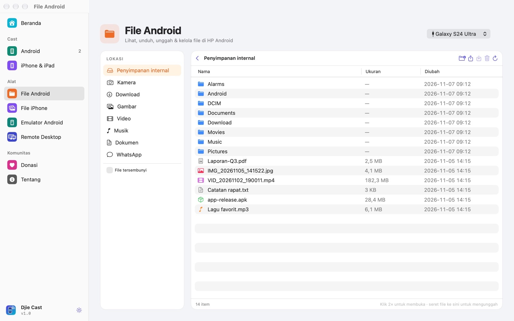
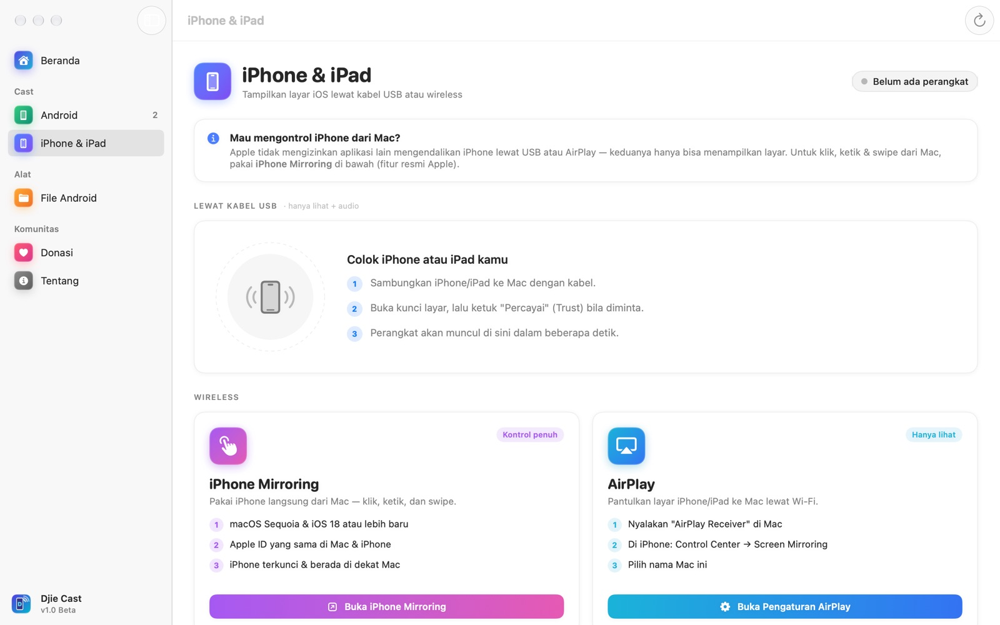
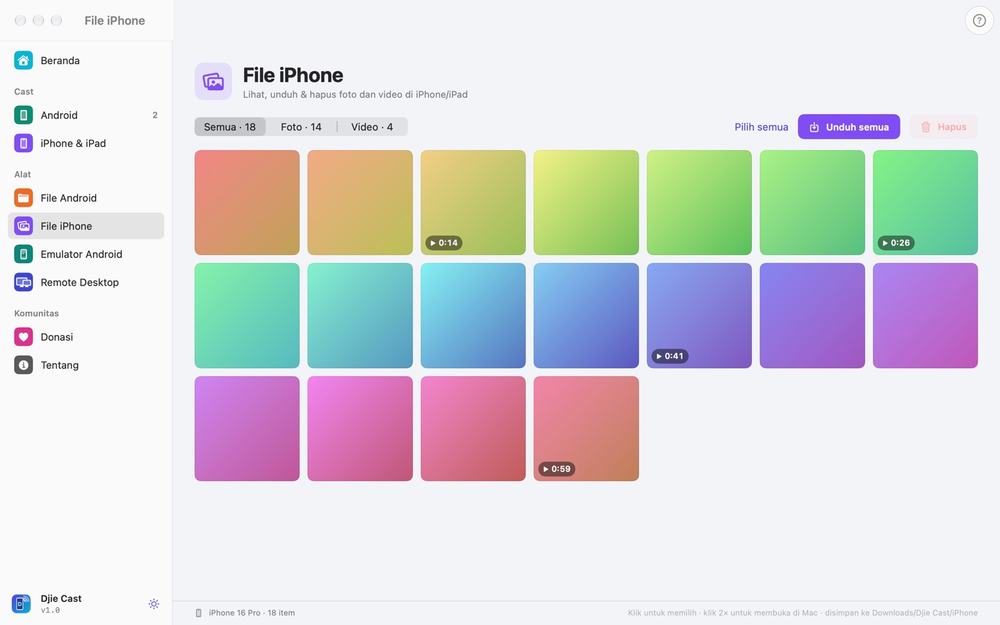
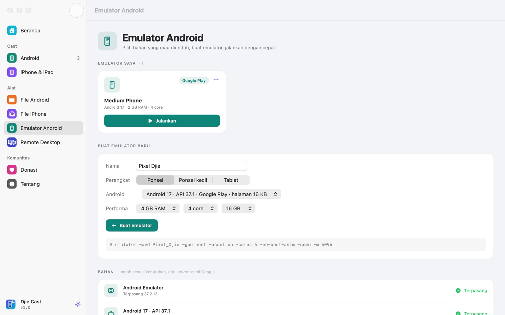
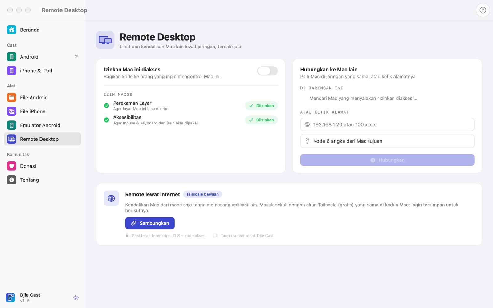
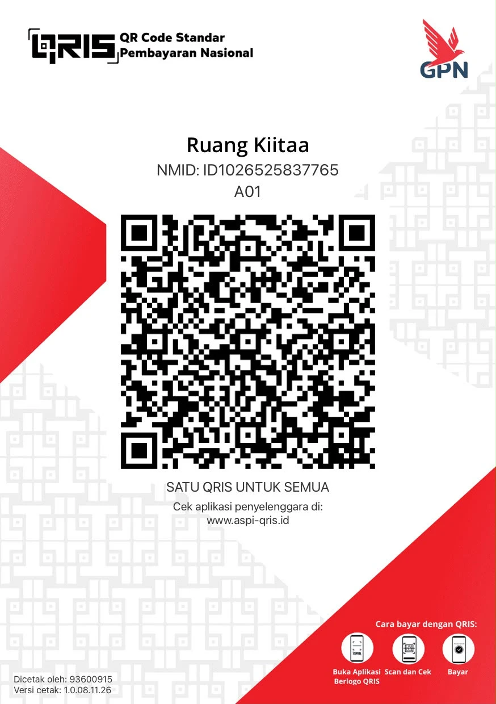

Layar HP-mu, langsung di Mac.
Mirror, kendalikan, dan kelola file Android & iPhone dari Mac. Satu klik, tanpa terminal.
Lihat Djie Cast bekerja.
Android, iPhone, file manager, emulator, dan remote desktop dalam setengah menit.
Pakai HP Android tanpa menyentuhnya.
Djie Cast menjalankan scrcpy di balik layar: video dari HP dikirim lewat kabel atau Wi-Fi, lalu klik dan ketikanmu dikirim balik ke HP.
Mirror dan kendalikan
Setiap HP yang tersambung muncul sebagai kartu. Tekan Mulai Cast, jendela HP terbuka di Mac dan langsung bisa diklik.
- USB atau Wi-FiMode wireless aktif dengan satu klik dari kartu perangkat.
- Tombol cepatBack, Home, Recent, volume, power, dan screenshot ke Desktop.
- RotasiPaksa portrait, landscape, atau kembali ke putar otomatis.
- KualitasHemat 1024p, Seimbang 1600p, Maksimal resolusi asli 120 fps.
- RekamSimpan rekaman layar HP ke folder Movies.
- Info HPSpesifikasi lengkap, baterai (kondisi, suhu, siklus), penyimpanan, RAM, plus Restart & Matikan.
- Kamera HPTampilkan kamera depan atau belakang HP di Mac, cocok untuk OBS dan live (Android 12+).
- AplikasiLihat semua aplikasi terinstal, uninstall dengan satu klik, atau pasang APK dari Mac.

Isi HP, dibuka seperti Finder
Jelajahi penyimpanan internal, lompat ke Kamera, Download, atau media WhatsApp. Klik dua kali untuk membuka file di Mac.
- UnduhFoto dan video tersalin ke Downloads/Djie Cast.
- UnggahSeret file dari Finder ke daftar, langsung terkirim ke HP.
- RapikanBuat folder, ganti nama, hapus dengan konfirmasi.

Saat jendela cast aktif, keyboard Mac jadi tombol HP.
Klik kanan juga berfungsi sebagai tombol Kembali.
Tiga jalur untuk iPhone.
Colok kabel dan layar iPhone tampil di Mac, lengkap dengan suara. Jendelanya ikut berputar saat iPhone dimiringkan.
| Jalur | Kontrol | Butuh |
|---|---|---|
| USB | Lihat + audio | Kabel, ketuk “Percayai” |
| iPhone Mirroring | Penuh | macOS 15 + iOS 18, Apple ID sama |
| AirPlay | Lihat | Wi-Fi sama, AirPlay Receiver aktif |
| Kamera | Kamera iPhone | Continuity Camera, macOS 14 + iOS 17 |
Apple hanya mengizinkan kontrol iPhone lewat iPhone Mirroring. Djie Cast membukakannya untukmu dari halaman yang sama.

Galeri iPhone, langsung di Mac
Colok kabel, buka kunci, dan semua foto & video iPhone/iPad tampil sebagai galeri lengkap dengan thumbnail.
- FilterSemua, Foto, atau Video, diurutkan dari yang terbaru.
- UnduhPilih beberapa atau unduh semua ke Downloads/Djie Cast/iPhone.
- Buka cepatKlik dua kali untuk membuka foto atau video di Mac.
- Info iPhoneModel, versi iOS, serial, IMEI, kesehatan & siklus baterai, kapasitas penyimpanan.
- AplikasiDaftar aplikasi terinstal di iPhone dan uninstall langsung dari Mac.

Emulator Android yang ngebut, tanpa Android Studio.
Pilih sendiri versi Android yang mau diunduh, buat emulator dalam satu klik, lalu jalankan dengan GPU Mac dan akselerasi hardware.
- Bahan pilihanmuMesin emulator dan system image Android 13–17 (Google Play atau Google APIs), langsung dari server resmi Google.
- AmanSetiap unduhan dicek checksum-nya dan lisensi Google ditampilkan sebelum diunduh.
- ProfilPonsel, ponsel kecil, atau tablet dengan RAM, core, dan penyimpanan sesuai kebutuhan.
- CepatBoot ke Android dalam hitungan detik, dengan Quick Boot dan tanpa animasi boot.

Kendalikan Mac lain, dari mana saja.
Seperti AnyDesk, tapi gratis dan tanpa server pihak ketiga. Bagikan kode 6 angka, dan Mac lain bisa melihat serta mengontrol layar Mac ini.
- Kode akses6 angka sekali pakai, bisa diganti kapan saja. Kode salah langsung ditolak.
- TerenkripsiKoneksi TLS dengan kunci dari kode akses; video H.264 hardware yang tajam.
- Kontrol penuhMouse, klik kanan, scroll, keyboard, dan shortcut ⌘ dikirim ke Mac tujuan.
- Lewat internetTailscale sudah tertanam. Masuk akun gratis, lalu Mac di jaringan mana pun bisa terhubung.
- Tetap amanMac yang dikontrol menampilkan panel merah dengan tombol Putuskan, dan izin macOS terpantau.

Semua yang ada di Djie Cast 1.0.
Android
- Mirror & kontrol lewat USB atau Wi-Fi
- Hingga 120 fps, audio ikut terdengar
- Back, Home, Recent, volume, power
- Screenshot & rekam layar
- Rotasi portrait / landscape
- File manager: unduh, unggah, ganti nama, hapus
- Panduan USB Debugging bawaan
- Info HP: spesifikasi, baterai, penyimpanan
- Daftar aplikasi, uninstall, pasang APK
iPhone & iPad
- Layar + audio lewat kabel USB
- iPhone Mirroring untuk kontrol penuh
- AirPlay wireless
- Jendela ikut berputar, bisa diputar manual
- Galeri foto & video, unduh ke Mac
- Panduan “Percayai Komputer Ini”
- Info iPhone: serial, IMEI, kesehatan baterai
- Daftar & uninstall aplikasi iPhone
Emulator
- Unduh versi Android pilihanmu
- Checksum & lisensi resmi Google
- Ponsel, ponsel kecil, tablet
- GPU Mac + akselerasi hardware
- Bisa langsung di-cast di Djie Cast
Remote Desktop
- Mac ke Mac dengan kode 6 angka
- Terenkripsi TLS
- Deteksi otomatis di jaringan yang sama
- Tailscale bawaan, login sekali tersimpan
- Satu pengontrol, bisa diputus kapan saja
Lainnya
- Mode terang / gelap / ikuti sistem
- Siap untuk OBS & live streaming
- Universal: Apple Silicon & Intel
- 100% lokal, tanpa akun & iklan
- Open source, lisensi MIT
Bawa layar HP ke siaran live.
Jendela cast Djie Cast bisa ditangkap software live di Mac. Cocok untuk live jualan, tutorial aplikasi, atau main game mobile sambil siaran.
* Selama versi Mac-nya tersedia. Untuk live ke TikTok dari Mac, OBS dengan stream key TikTok juga bisa dipakai.
- 01Mulai castSambungkan HP Android atau iPhone, lalu tekan Mulai Cast.
- 02Rapikan jendelanyaNyalakan “Tanpa bingkai jendela” dan pilih preset Maksimal supaya gambar bersih dan tajam.
- 03Tangkap di software liveDi OBS: Sources → + → macOS Screen Capture → Window → pilih jendela HP.
- 04SiaranAtur posisi di scene, dan HP tetap bisa dikontrol dari Mac selama live.
Tiga langkah, sekali saja.
Unduh DMG
File DMG terbaru dari tombol di atas atau halaman Releases.
Seret ke Applications
Buka DMG, seret ikon Djie Cast ke folder Applications.
Klik kanan → Open
Hanya untuk pembukaan pertama, karena app belum dinotarisasi Apple.
# hapus tanda karantina, lalu buka app lagi $ xattr -dr com.apple.quarantine "/Applications/Djie Cast.app"
Yang sering ditanyakan.
Benar-benar gratis?
Ya. Lisensi MIT, tanpa iklan dan tanpa langganan. Donasi sifatnya sukarela.
Cara menyalakan USB Debugging?
Pengaturan → Tentang ponsel → ketuk “Nomor bentukan” tujuh kali. Lalu buka Opsi Developer, nyalakan USB Debugging, colok kabel, dan ketuk Izinkan di HP.
Kenapa iPhone tidak bisa diklik lewat kabel?
Itu batasan Apple. Lewat USB dan AirPlay, aplikasi pihak ketiga hanya boleh menampilkan layar. Untuk kontrol penuh, pakai iPhone Mirroring yang bisa dibuka dari Djie Cast.
Kenapa muncul peringatan saat dibuka?
App belum dinotarisasi Apple karena itu butuh akun developer berbayar. Kode sumbernya terbuka di GitHub untuk diperiksa siapa saja. Klik kanan → Open cukup sekali.
Ada data yang dikirim ke internet?
Tidak. Video dan file hanya berpindah antara Mac dan HP-mu. Tidak ada akun, analitik, atau server.
Remote Desktop bisa ke Windows?
Untuk saat ini Remote Desktop bekerja antar Mac. Djie Cast adalah aplikasi macOS, jadi kedua komputer perlu memasang Djie Cast.
Apakah emulator butuh Android Studio?
Tidak. Djie Cast mengunduh mesin emulator dan versi Android pilihanmu langsung dari server Google. Kalau Android Studio sudah terpasang, bahan yang ada dipakai bersama.
Bisa untuk main game?
Bisa. Pakai kabel USB, pilih preset Maksimal, lalu paksa layar ke landscape dari tombol rotasi.

Traktir kopi pembuatnya.
Djie Cast dibuat oleh Adjie Kurniawan dan dibagikan gratis. Donasi membantu fitur berikutnya lahir lebih cepat.
- Buka aplikasi bank atau e-wallet berlogo QRIS: GoPay, OVO, DANA, ShopeePay, atau m-banking.
- Scan kode QRIS dan isi nominal seikhlasnya.
- Kirim bukti transfer ke nomor di bawah.
Colok. Klik. Selesai.
Gratis selamanya, tanpa akun dan tanpa iklan. Kalau ada masalah atau ide fitur, ceritakan lewat GitHub.
- File
- DMG 20 MB
- Sistem
- macOS 14 Sonoma atau lebih baru
- Chip
- Apple Silicon & Intel
- Lisensi
- MIT · open source